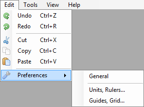

Main Menu Edit

Undo (Ctrl + Z) undo your last change.
Redo (Ctrl + R) redo last Undo action.
Cut (Ctrl + X) cuts currently selected object to clipboard.
Copy (Ctrl + C) copy currently selected object to clipboard.
Paste (Ctrl + V) paste object from clipboard.
Preferences consists of tree sub menus, (General, Units, Grid). Each of them opens corresponding options window.